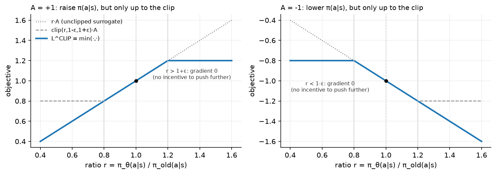
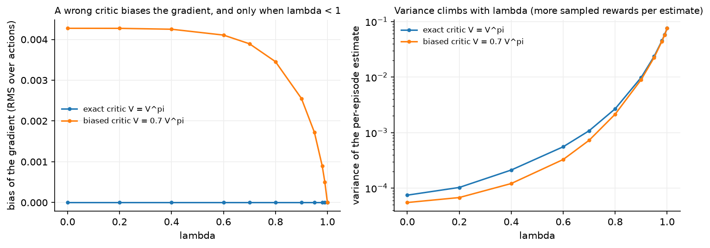

Policy gradients, GAE and PPO¶
Why this matters at staff level. PPO is the algorithm behind OpenAI Five, most continuous-control robotics results, and RLHF. Candidates who can only recite the clipped objective get found out by one follow-up: what does the gradient do when the ratio is outside the clip range, and why is that safe? This chapter derives everything from the log-derivative trick so that the clip, the value head, the advantage, the entropy bonus and the KL early-stop each have a reason. It also ends with the mapping from this notation to the RLHF notation in Part VII, so the LLM version costs you no new derivations.
TL;DR, the interview card¶
- Score function estimator: \(\nabla_\theta \E_{\tau\sim\pi_\theta}[R(\tau)] = \E[\nabla_\theta \log \pi_\theta(\tau) R(\tau)]\), which needs only samples and the ability to differentiate \(\log\pi_\theta\).
- REINFORCE: \(\nabla_\theta J = \E\big[\sum_t \nabla_\theta\log\pi_\theta(a_t|s_t)\,G_t\big]\) with \(G_t\) the reward-to-go. Rewards before \(t\) do not belong in the gradient at \(t\).
- Any baseline \(b(s_t)\) subtracts without bias because \(\E_{a\sim\pi}[\nabla_\theta\log\pi_\theta(a|s)] = \nabla_\theta\sum_a \pi_\theta(a|s) = \nabla_\theta 1 = 0\). The variance-minimising baseline is close to \(V^\pi(s)\).
- Advantage \(A^\pi(s,a) = Q^\pi(s,a) - V^\pi(s)\). Actor-critic uses a learned \(V_\phi\) so the advantage is estimated from a one-step TD error \(\delta_t\) instead of a full return.
- GAE: \(\hat A_t^{\text{GAE}(\gamma,\lambda)} = \sum_{l\ge0}(\gamma\lambda)^l\delta_{t+l}\), the exponentially weighted average of all \(n\)-step advantages. \(\lambda = 0\) is the one-step TD advantage (low variance, biased), \(\lambda = 1\) is Monte Carlo (unbiased, high variance).
- PPO ratio \(r_t(\theta) = \pi_\theta(a_t|s_t)/\pi_{\text{old}}(a_t|s_t)\); objective \(L^{\text{CLIP}} = \E[\min(r_t\hat A_t, \mathrm{clip}(r_t,1-\epsilon,1+\epsilon)\hat A_t)]\).
- The \(\min\) makes \(L^{\text{CLIP}}\) a lower bound on the unclipped surrogate. Gradient is zero when \(r_t\) has moved past the clip in the direction the advantage wants, and normal otherwise. Moving back toward \(\pi_{\text{old}}\) is always allowed.
- Full loss: \(L = -L^{\text{CLIP}} + c_v\,(V_\phi - R_t)^2 - c_e\,H[\pi_\theta]\), with advantage normalisation per batch, several epochs of minibatch SGD per rollout, and KL early-stopping as a safety net.
- Continuous control off-policy alternatives: DDPG (deterministic actor + critic), TD3 (twin critics, delayed actor, target policy smoothing), SAC (stochastic actor, entropy in the objective, twin critics).
1. Intuition first¶
Q-learning answers "how good is this action?" and then acts greedily. Policy gradients skip the middle step: parameterise \(\pi_\theta(a|s)\) and push its parameters in whatever direction increases expected return.
The mechanical question is how to differentiate an expectation whose sampling distribution depends on \(\theta\). You cannot push the gradient inside, because moving \(\theta\) moves which trajectories you see. The log-derivative trick handles it, and the resulting rule is one sentence: increase the log-probability of actions that led to better-than-expected outcomes, in proportion to how much better.
Three refinements turn that sentence into PPO, and each one removes a specific problem:
- Credit only the future. An action at time \(t\) cannot have caused reward at time \(t-1\), so multiply \(\nabla\log\pi(a_t|s_t)\) by the reward-to-go \(G_t\) instead of the whole-episode return. This drops a term whose expectation is zero and whose variance is not.
- Compare against a baseline. "Better than expected" needs an expectation. Subtract \(V(s_t)\) and multiply by the advantage instead of the raw return. Zero bias, large variance reduction.
- Do not take a big step. The gradient is valid only near \(\pi_\theta\); take too large a step and the data you collected no longer describes the policy you now have. TRPO enforces this with a KL constraint, PPO with a clip.

Read the left panel. The advantage is positive, so you want to raise \(\pi_\theta(a|s)\), which means moving \(r\) to the right. The objective rises until \(r = 1+\epsilon\) and then flattens: past that point there is no further gain, so no gradient, so no incentive to keep pushing. Left of \(1\), the objective still slopes, so if the policy has drifted too far down it can come back. The right panel is the mirror image for a negative advantage.
2. The math¶
2.1 The objective and the score function estimator¶
A trajectory \(\tau = (s_0,a_0,r_1,s_1,\ldots)\) has probability
and the objective is \(J(\theta) = \E_{\tau\sim p_\theta}[R(\tau)]\) with \(R(\tau) = \sum_t \gamma^t r_{t+1}\).
Differentiate, using the identity \(\nabla_\theta p_\theta = p_\theta \nabla_\theta \log p_\theta\) (the log-derivative trick, also called the score function or REINFORCE trick):
Now expand \(\log p_\theta(\tau)\):
Neither \(\rho_0\) nor \(P\) depends on \(\theta\), so both vanish under \(\nabla_\theta\). The dynamics disappear from the gradient, which is what makes this a model-free method:
The estimator is unbiased and requires only that you can sample trajectories and evaluate \(\nabla_\theta\log\pi_\theta\). The price is variance: a single trajectory's return can be far from its mean, and the estimator multiplies that noise by the score.
2.2 Reward-to-go¶
The form above multiplies every action's score by the whole return, including rewards collected before the action. Those cannot be affected by it. Formally, for \(t' < t\),
because conditioned on everything up to \(s_t\), the reward \(r_{t'+1}\) is a constant and \(\E_{a_t\sim\pi_\theta}[\nabla_\theta\log\pi_\theta(a_t|s_t)] = 0\) (proved in §2.3). Dropping those terms leaves the expectation unchanged and removes their variance:
This is REINFORCE (Williams, 1992).
2.3 Baselines: the proof that they are free¶
Claim: for any function \(b\) that does not depend on the action,
Proof, in three lines:
and \(b(s)\) pulls out of the expectation over \(a\). The interchange of \(\nabla_\theta\) and
\(\sum_a\) is valid for finite action sets, and for continuous actions under standard
regularity conditions on \(\pi_\theta\). The same proof is checked numerically in
tests/test_rl_reinforce.py by summing \(\pi(a|s)\nabla_\theta\log\pi(a|s)\) over all four
actions of a small network and asserting the result is zero to \(10^{-6}\).
So the estimator
is unbiased for any state-dependent \(b\). Variance is a different story: writing \(g_t = \nabla_\theta\log\pi_\theta(a_t|s_t)\), the per-term variance is minimised at
a norm-weighted average of the return. Everyone uses \(b(s) = V^\pi(s)\) instead, which is close, has an obvious interpretation, and is learnable by regression. With \(b = V^\pi\) the weight becomes \(G_t - V^\pi(s_t)\), an estimate of the advantage \(A^\pi(s_t,a_t)\).
The intuition for why this helps: in a task where all returns are between \(+100\) and \(+102\), the raw REINFORCE weight is around \(+101\) for every action, so every action's log-probability is pushed up hard and the useful signal (the \(\pm1\) differences) is buried in the noise of the sampling. Subtracting \(V \approx 101\) leaves exactly the differences.
A baseline that depends on the action is not a baseline
The proof requires \(b\) to be independent of \(a\) given \(s\). Subtracting something like \(Q_\phi(s,a)\) introduces bias, and bias in the policy gradient is the kind of bug that shows up as a policy that quietly converges to the wrong thing. Action-dependent baselines can be made unbiased with extra correction terms, and the empirical evidence that they help is weak.
2.4 Actor-critic¶
With \(b = V_\phi\) learned by a critic, and the return replaced by a bootstrapped estimate, you get the family of actor-critic methods. The one-step version uses
which is the TD error from chapter 2. Note what \(\delta_t\) is an estimate of:
when \(V_\phi = V^\pi\). So the TD error is an unbiased estimate of the advantage given a correct critic, and a biased one otherwise. Two losses, optimised together:
where the bar denotes a stopped gradient. The critic loss is a semi-gradient again: the target \(r + \gamma V_\phi(s')\) is treated as constant, exactly as in DQN.
The bias/variance position of one-step actor-critic is the opposite of REINFORCE. REINFORCE is unbiased with the variance of a full return; one-step actor-critic has the variance of a single transition and the bias of the critic. GAE is the dial between them.
2.5 Deriving GAE¶
Define the \(n\)-step advantage estimator, formed by taking \(n\) real rewards and then bootstrapping:
Each of these is a valid advantage estimate with a different bias/variance profile: \(\hat A^{(1)} = \delta_t\) has the most bias and least variance, and \(\hat A^{(\infty)} = G_t - V(s_t)\) has no bias (given any \(V\), since the bootstrap term vanishes) and the most variance.
Now write \(\hat A^{(n)}\) in terms of TD errors. Telescoping:
Check the second line by substituting \(\delta_t = r_{t+1} + \gamma V(s_{t+1}) - V(s_t)\) and \(\gamma\delta_{t+1} = \gamma r_{t+2} + \gamma^2 V(s_{t+2}) - \gamma V(s_{t+1})\): the \(\gamma V(s_{t+1})\) terms cancel. Every \(n\)-step advantage is a discounted sum of TD errors, and longer horizons just add more terms.
GAE takes the exponentially weighted average of all of them, with weight \((1-\lambda)\lambda^{n-1}\) on \(\hat A^{(n)}\):
giving
The third line is where the work happens: collect the coefficient of each \(\delta_{t+l}\) across all the \(n\)-step terms that contain it, which is a geometric series in \(\lambda\).
Two sanity checks that are worth doing out loud in an interview. \(\lambda = 0\) gives \(\hat A_t = \delta_t\), the one-step actor-critic advantage. \(\lambda = 1\) gives \(\sum_l \gamma^l \delta_{t+l}\), which telescopes to \(G_t - V(s_t)\), the Monte Carlo advantage. So \(\lambda\) interpolates exactly as \(\lambda\) in TD(\(\lambda\)) does, and for the same reason.
The recursive form used in code follows immediately:
computed backwards along the trajectory, with \(\hat A_{T} = 0\) past the end of an episode.
One more property decides how to read the bias axis. The policy gradient is unchanged by any state-dependent baseline (§2.3), so a critic that is wrong by a constant per state costs nothing: its error is absorbed as a baseline. At \(\lambda = 1\) the estimate is \(G_t - V(s_t)\), and the critic enters only as that constant, so the gradient is unbiased no matter how bad the critic is. For \(\lambda < 1\) the critic's error enters through the bootstrap terms \(\gamma V(s_{t+l+1})\), which depend on where the action took you, and that part does bias the gradient.

The left panel plots exactly that quantity: the error of \(\E[\hat A_0 \mid s_0,a]\) against the dynamic-programming advantage, after removing the policy-weighted mean over actions, computed in closed form rather than sampled. With an exact critic it is zero at every \(\lambda\). With the critic scaled to \(0.7V^\pi\) it sits near \(4.3\times10^{-3}\) until \(\lambda \approx 0.8\) and then falls to exactly zero at \(\lambda = 1\). The right panel is the price: the variance of the per-episode estimate rises by about three orders of magnitude from \(\lambda = 0\) to \(\lambda = 1\) (note the log axis). Typical settings are \(\lambda \in [0.9, 0.97]\), which take most of the bias reduction before the variance becomes steep.
2.6 Why you cannot just take a big step: TRPO in one page¶
Policy gradient gives you a direction. It does not tell you how far to go, and the usual answer (a learning rate) is bad here for a reason specific to RL: the data was sampled from \(\pi_{\text{old}}\), and once \(\pi_\theta\) moves far from it, the sampled advantages no longer describe the new policy's behaviour. A too-large step can collapse the policy into a degenerate one from which the gradient cannot recover, because the actions needed to escape are no longer sampled.
TRPO starts from a surrogate objective. Define
which is an importance-sampled estimate of the improvement, computable from \(\pi_{\text{old}}\)'s data. There is a bound of the form
so improving the surrogate while keeping the KL small guarantees improvement of the true objective. Using the penalty coefficient \(C\) from the theory gives steps that are far too small, so TRPO instead solves a constrained problem,
by linearising the objective, taking a quadratic approximation of the KL (whose Hessian is the Fisher information matrix \(F\)), and stepping along the natural gradient direction \(F^{-1}\nabla_\theta L\) with a step size set by the constraint, followed by a backtracking line search to guarantee improvement. \(F^{-1}g\) is computed by conjugate gradient with Hessian-vector products, so \(F\) is never formed.
The natural gradient's appeal is that it measures distance in distribution space rather than parameter space: a fixed step in KL means the same change in behaviour regardless of how the policy is parameterised. Its cost is the conjugate gradient solve inside every update, plus the line search, plus a second-order code path.
PPO is the observation that you can get most of the benefit with a first-order method by building the constraint into the objective itself.
2.7 PPO's clipped objective¶
Let \(r_t(\theta) = \dfrac{\pi_\theta(a_t|s_t)}{\pi_{\text{old}}(a_t|s_t)}\), so \(r_t(\theta_{\text{old}}) = 1\). The clipped surrogate is
with \(\epsilon\) typically 0.1 or 0.2.
Why the \(\min\) makes this a pessimistic bound. The unclipped term \(r_t\hat A_t\) is the importance-sampled surrogate from TRPO. The clipped term equals it inside \([1-\epsilon,1+\epsilon]\) and is constant outside. Taking the minimum of the two means the objective never exceeds the unclipped surrogate, so \(L^{\text{CLIP}} \le L^{\text{IS}}\) pointwise, which is what "pessimistic lower bound" means here. Optimising a lower bound on the improvement cannot promise the improvement, and it does remove the incentive to exploit large ratios where the estimate is least trustworthy.
What the gradient does, region by region. Take a single sample and differentiate with respect to \(\log\pi_\theta(a_t|s_t)\), noting \(\partial r_t/\partial \log\pi_\theta = r_t\):
| Case | \(r_t\) | Which branch the \(\min\) picks | \(\partial L^{\text{CLIP}}/\partial\log\pi_\theta\) |
|---|---|---|---|
| \(\hat A_t > 0\) | \(r_t < 1-\epsilon\) | unclipped (\(r_t\hat A_t\) is smaller) | \(r_t\hat A_t > 0\): push probability up |
| \(\hat A_t > 0\) | \(1-\epsilon \le r_t \le 1+\epsilon\) | both equal | \(r_t \hat A_t > 0\): push up |
| \(\hat A_t > 0\) | \(r_t > 1+\epsilon\) | clipped (constant) | \(0\): stop pushing |
| \(\hat A_t < 0\) | \(r_t > 1+\epsilon\) | unclipped (more negative) | \(r_t\hat A_t < 0\): push probability down |
| \(\hat A_t < 0\) | \(1-\epsilon \le r_t \le 1+\epsilon\) | both equal | \(r_t\hat A_t < 0\): push down |
| \(\hat A_t < 0\) | \(r_t < 1-\epsilon\) | clipped (constant) | \(0\): stop pushing |
Read the pattern: the gradient vanishes only when the ratio has already moved past the clip boundary in the direction the advantage wants. If the ratio has moved the wrong way (for instance \(r_t < 1-\epsilon\) with a positive advantage, meaning a good action's probability has fallen), the gradient is live and pulls it back. That asymmetry is why the \(\min\) is there and why plain clipping without the \(\min\) would be wrong: clipping alone would also kill the gradient for ratios that have drifted the wrong way, leaving the policy stuck.
The exact gradient values are pinned down in tests/test_rl_ppo.py. With \(\epsilon = 0.2\),
\(\hat A = 2\) and \(r = 1\), the gradient of the loss with respect to \(\log\pi\) is \(-2\) (the
loss is the negative objective); at \(r = 1.5\) it is exactly \(0\); at \(r = 0.5\) it is \(-1.0\),
which is \(-r\hat A\).
What the clip does not do. It does not bound the KL divergence between \(\pi_\theta\) and \(\pi_{\text{old}}\). A ratio can stay inside \([1-\epsilon,1+\epsilon]\) for the sampled actions while the policy changes a lot on actions that were not sampled, and successive minibatch epochs can compound small moves. This is why implementations also track an approximate KL and stop early. Say this when asked whether PPO "enforces a trust region": the clip is a heuristic that usually keeps updates small, with no guarantee.
2.8 The rest of the PPO loss¶
- Value target \(R_t = \hat A_t + V_{\text{old}}(s_t)\), the GAE return. Using the GAE return instead of the raw Monte Carlo return keeps the value target consistent with the advantage estimate. \(c_v\) is usually 0.5 (or 1.0 when the networks are separate).
- Entropy bonus with \(c_e\) around 0.01 (0 for many continuous-control tasks). It keeps the policy from collapsing to a deterministic one early, which would end exploration. In RLHF it is usually dropped, since the KL penalty to the reference policy plays a similar role.
- Advantage normalisation: subtract the batch mean and divide by the batch standard deviation before computing the loss. This makes the effective step size independent of the reward scale. It introduces a small bias (the normalisation constants are computed from the same batch) that is universally accepted.
- Multiple epochs of minibatch SGD over one rollout, typically 4 to 10 epochs with minibatches of 64 to 4096. This is where PPO's sample efficiency over vanilla policy gradient comes from, and it is only safe because the clip limits how far \(\pi_\theta\) can drift from the \(\pi_{\text{old}}\) that generated the data. At the first minibatch of the first epoch, every \(r_t = 1\) exactly, which is a useful debugging check.
- KL early stopping: compute an approximate \(\KL(\pi_{\text{old}}\|\pi_\theta)\) after each epoch and break out if it exceeds a target (0.01 to 0.05). The estimator used in practice is \(\E[e^{\log r} - 1 - \log r]\), which is non-negative and lower-variance than \(\E[-\log r]\).
- Gradient clipping by global norm (0.5 is standard).
2.9 The 37 implementation details, for literacy¶
Huang et al. catalogued 37 details that separate a working PPO from a paper-faithful one that does not reproduce. The ones worth knowing by name:
| Detail | Why it exists |
|---|---|
| Vectorised environments with \(N\) parallel copies | Decorrelates the on-policy batch, since one long trajectory is highly correlated |
| Observation normalisation with a running mean and variance | Networks train poorly on unnormalised inputs, and the input scale drifts during training |
| Reward scaling by a running estimate of the return's standard deviation | Keeps the value targets in a learnable range |
| Orthogonal initialisation, policy head scaled by 0.01 | Starts the policy near-uniform, so early logits do not saturate |
| Adam epsilon \(10^{-5}\) | The PyTorch default of \(10^{-8}\) interacts badly with small gradients here |
| Learning-rate annealing to zero | Late large steps undo late fine-tuning |
| Value-function loss clipping | Mirrors the policy clip; the paper's ablations find it has little effect |
| Separate or shared network trunk | Sharing saves compute and couples the two loss scales |
| Bootstrapping on time-limit truncation | A truncated episode is not a terminal state |
| Advantage normalisation at the minibatch level | See §2.8 |
The general lesson worth stating: published RL results depend on implementation choices that are not in the algorithm box, and reproducing a number requires reproducing the codebase. This is also why "PPO" in one library and "PPO" in another can differ by a wide margin on the same task.
2.10 Off-policy continuous control: DDPG, TD3, SAC¶
DQN cannot be applied to continuous actions because \(\max_{a'}Q(s',a')\) has no closed form. The deterministic policy gradient family replaces the max with a learned actor.
DDPG learns a deterministic actor \(\mu_\theta(s)\) and a critic \(Q_\phi(s,a)\), with the actor trained by gradient ascent through the critic:
target networks updated by Polyak averaging, exploration by adding noise to the action. It is sample-efficient and notoriously brittle.
TD3 adds three fixes to DDPG's failure modes: twin critics with \(\min(Q_{\phi_1}, Q_{\phi_2})\) in the target (which counteracts over-estimation by being deliberately pessimistic), delayed actor updates (one actor update per two critic updates, so the actor chases a more settled critic), and target policy smoothing (noise added to the target action, so the critic cannot exploit a narrow peak).
SAC optimises the maximum-entropy objective
with a stochastic actor, twin critics, and a temperature \(\alpha\) that is usually tuned automatically against a target entropy. The entropy term is inside the value function, so the soft value is \(V(s) = \E_{a\sim\pi}[Q(s,a) - \alpha\log\pi(a|s)]\). Adding entropy to the objective keeps exploration alive throughout training and makes the policy robust to model error, since it prefers regions where several actions are acceptable. SAC is the default for continuous control today: off-policy (so it reuses data), stochastic (so it explores), and not very sensitive to hyperparameters.
| DDPG | TD3 | SAC | PPO | |
|---|---|---|---|---|
| Policy | deterministic | deterministic | stochastic | stochastic |
| On/off-policy | off | off | off | on |
| Critics | 1 | 2 (min) | 2 (min) | 1 (state value) |
| Exploration | action noise | action noise | entropy term | entropy bonus, stochastic policy |
| Sample efficiency | high | high | high | low |
| Robustness to hyperparameters | low | medium | high | high |
| Parallelises to thousands of workers | awkward | awkward | awkward | naturally |
The last row is why PPO dominates large-scale settings despite being the least sample-efficient: when you can generate cheap parallel rollouts, throughput beats sample efficiency, and PPO's on-policy data pipeline is simple to shard.
2.11 Offline RL, in one paragraph¶
Offline (batch) RL learns from a fixed dataset with no interaction. The failure mode is distribution shift: the learned policy proposes actions the dataset does not contain, the critic has no data there, and the bootstrapped \(\max\) or actor-maximisation exploits the critic's extrapolation error. Two standard responses. CQL adds a penalty to the critic loss that pushes down Q-values for out-of-distribution actions while pushing up values for dataset actions, so the learned \(Q\) lower-bounds the true value. IQL avoids querying unseen actions at all: it fits an expectile regression to the dataset's own Q-values to approximate a max over in-support actions, then extracts a policy by advantage-weighted regression. Both connect directly to imitation learning (chapter 5): when the dataset is expert data and you apply enough pessimism, offline RL degrades gracefully toward behavioural cloning.
3. Implementation¶
Four algorithms, built in order, each reusing the previous one's parts.
3.1 REINFORCE¶
def rewards_to_go(rewards: np.ndarray, gamma: float) -> np.ndarray:
"""``G_t = sum_{k>=0} gamma^k r_{t+k+1}``; (T,) -> (T,)."""
G = np.zeros(len(rewards), dtype=np.float32) # (T,)
running = 0.0
for t in reversed(range(len(rewards))):
running = rewards[t] + gamma * running
G[t] = running
return G
def reinforce_loss(logp, returns, baseline=None):
"""``-(1/T) sum_t logp_t * (G_t - b_t)``; minimising it ascends ``J``."""
weights = returns if baseline is None else returns - baseline # (T,)
return -(logp * weights.detach()).mean()
The loss is the negative of the objective because optimisers minimise. The .detach() on
the weights is the line to get right: \(G_t\) and \(b(s_t)\) are numbers, not functions of
\(\theta\) for gradient purposes. Autograd differentiating through the return would be
meaningless (it came from the environment) and differentiating through a learned baseline
would inject the bias §2.3 warns about.
The backward pass of -(logp * weights).mean() produces exactly
\(-\frac{1}{T}\sum_t \nabla_\theta\log\pi_\theta(a_t|s_t)\,w_t\), which is the estimator from
§2.2. This is the general trick for implementing score-function estimators: write a
"surrogate loss" whose gradient is the estimator you derived, not whose value means
anything.
3.2 Actor-critic¶
def actor_critic_losses(actor, critic, obs, actions, rewards, next_obs, dones, gamma):
v = critic(obs) # (T,)
with torch.no_grad():
v_next = critic(next_obs) # (T,)
target = rewards + gamma * (1.0 - dones) * v_next # (T,) TD target
delta = target - v # (T,) TD error; gradient flows into v only
logp = Categorical(logits=actor(obs)).log_prob(actions) # (T,)
actor_loss = -(logp * delta.detach()).mean()
critic_loss = (delta**2).mean()
return actor_loss, critic_loss
delta is used twice with different gradient treatment: detached in the actor loss (it is
a weight), attached in the critic loss (it is a residual). Writing this in one expression
and reusing it is both efficient and a place where a missing .detach() silently changes
the algorithm, so the test checks the critic's bias gradient equals \(-2\bar\delta\), which
is the semi-gradient value.
3.3 GAE¶
def compute_gae(rewards, values, dones, last_value, gamma, lam):
"""Backward recursion ``A_t = delta_t + gamma lambda (1 - d_t) A_{t+1}``."""
T = rewards.shape[0]
adv = np.zeros(T, dtype=np.float64) # (T,)
next_adv, next_value = 0.0, last_value
for t in reversed(range(T)):
nonterminal = 1.0 - dones[t]
delta = rewards[t] + gamma * nonterminal * next_value - values[t] # TD error
next_adv = delta + gamma * lam * nonterminal * next_adv
adv[t] = next_adv
next_value = values[t]
return adv, adv + values
Nine lines for the boxed equation in §2.5. Three details:
- The loop runs backwards, because \(\hat A_t\) depends on \(\hat A_{t+1}\).
nonterminalappears twice: once to zero the bootstrap \(V(s_{t+1})\) at an episode end, and once to stop the advantage recursion from carrying credit across the episode boundary. Forgetting the second one is a real bug that leaks advantage from one episode into the previous one, and it only shows up as slightly worse performance.last_valuebootstraps a rollout that was cut mid-episode, which is what makes fixed-length rollouts possible at all.
The returned adv + values is the value target \(R_t = \hat A_t + V(s_t)\) from §2.8.
3.4 PPO¶
def ppo_clip_loss(logp_new, logp_old, adv, clip_eps):
"""``-E[min(r A, clip(r, 1-eps, 1+eps) A)]`` with ``r = exp(logp_new - logp_old)``."""
ratio = torch.exp(logp_new - logp_old) # (B,) importance ratio, = 1 at the first epoch
unclipped = ratio * adv # (B,)
clipped = torch.clamp(ratio, 1.0 - clip_eps, 1.0 + clip_eps) * adv # (B,)
return -torch.min(unclipped, clipped).mean()
The ratio is computed as exp(logp_new - logp_old) instead of dividing probabilities, for
numerical reasons: log-probabilities of long action sequences underflow, and the difference
is well-conditioned.
The update loop, with the pieces from §2.8:
def ppo_update(actor, critic, opt, buf, last_value, cfg):
adv_np, ret_np = compute_gae(buf.rewards, buf.values, buf.dones, last_value, cfg.gamma, cfg.lam)
obs = torch.from_numpy(buf.obs) # (N, obs_dim)
actions = torch.from_numpy(buf.actions) # (N,)
logp_old = torch.from_numpy(buf.logp) # (N,)
adv = torch.from_numpy(adv_np).float() # (N,)
returns = torch.from_numpy(ret_np).float() # (N,)
if cfg.normalise_adv:
adv = (adv - adv.mean()) / (adv.std() + 1e-8)
N = obs.shape[0]
for epoch in range(cfg.n_epochs):
perm = torch.randperm(N) # (N,) fresh shuffle every epoch
for start in range(0, N, cfg.minibatch_size):
idx = perm[start : start + cfg.minibatch_size] # (B,)
dist = Categorical(logits=actor(obs[idx]))
logp_new = dist.log_prob(actions[idx]) # (B,)
policy_loss = ppo_clip_loss(logp_new, logp_old[idx], adv[idx], cfg.clip_eps)
value_loss = ppo_value_loss(critic(obs[idx]), returns[idx])
entropy = dist.entropy().mean()
loss = policy_loss + cfg.value_coef * value_loss - cfg.entropy_coef * entropy
opt.zero_grad()
loss.backward()
nn.utils.clip_grad_norm_(list(actor.parameters()) + list(critic.parameters()), cfg.max_grad_norm)
opt.step()
with torch.no_grad():
log_ratio = logp_new - logp_old[idx] # (B,)
stats["approx_kl"] = float((torch.exp(log_ratio) - 1.0 - log_ratio).mean()) # k3 estimator
if cfg.target_kl is not None and stats["approx_kl"] > cfg.target_kl:
break # KL early stopping
The structure to memorise: collect a fixed-length rollout with \(\pi_{\text{old}}\), compute
advantages once for the whole batch, then loop epochs, shuffle, and take minibatch steps.
logp_old is stored during collection and never recomputed, which is what makes
\(\pi_{\text{old}}\) well defined. The k3 KL estimator \(\E[e^{x} - 1 - x]\) with
\(x = \log r\) is non-negative sample-wise and has lower variance than \(-\E[\log r]\).
Rollout collection stores \(\log\pi_{\text{old}}(a_t|s_t)\) and \(V_{\text{old}}(s_t)\) at acting time:
a, logp = sample_action(actor, obs, rng) # a ~ pi_old, logp = log pi_old(a|s)
with torch.no_grad():
v = float(critic(torch.from_numpy(obs).unsqueeze(0)).item()) # V_old(s)
next_obs, r, done = env.step(a, rng)
buf.add(obs, a, logp, r, v, done)
Full implementations
"""Generalised Advantage Estimation (Schulman et al., 2016) in NumPy.
delta_t = r_t + gamma (1 - d_t) V(s_{t+1}) - V(s_t)
A_t = sum_{l>=0} (gamma lambda)^l delta_{t+l} (reset at episode ends)
R_t = A_t + V(s_t) (value-function target)
``lambda = 0`` gives the one-step TD advantage (low variance, biased by V);
``lambda = 1`` gives the Monte Carlo advantage ``G_t - V(s_t)`` (unbiased, high variance).
"""
from __future__ import annotations
import numpy as np
def compute_gae(
rewards: np.ndarray,
values: np.ndarray,
dones: np.ndarray,
last_value: float,
gamma: float,
lam: float,
) -> tuple[np.ndarray, np.ndarray]:
"""Backward recursion ``A_t = delta_t + gamma lambda (1 - d_t) A_{t+1}``.
Args:
rewards: (T,) rewards ``r_t`` for taking ``a_t`` in ``s_t``.
values: (T,) critic values ``V(s_t)``.
dones: (T,) 1.0 if the episode ended after step ``t`` (then ``s_{t+1}`` is terminal).
last_value: ``V(s_T)`` used to bootstrap a truncated final segment.
Returns:
``(advantages (T,), returns (T,))`` with ``returns = advantages + values``.
"""
T = rewards.shape[0]
adv = np.zeros(T, dtype=np.float64) # (T,)
next_adv, next_value = 0.0, last_value
for t in reversed(range(T)):
nonterminal = 1.0 - dones[t]
delta = rewards[t] + gamma * nonterminal * next_value - values[t] # TD error
next_adv = delta + gamma * lam * nonterminal * next_adv
adv[t] = next_adv
next_value = values[t]
return adv, adv + values
def n_step_advantage(
rewards: np.ndarray, values: np.ndarray, dones: np.ndarray, last_value: float, gamma: float, n: int
) -> np.ndarray:
"""``A^(n)_t = r_t + ... + gamma^{n-1} r_{t+n-1} + gamma^n V(s_{t+n}) - V(s_t)`` for a single episode.
Used in tests to check that GAE is the ``(1-lambda) sum_n lambda^{n-1} A^(n)`` mixture.
Assumes ``dones`` marks at most the final step (one episode).
"""
T = rewards.shape[0]
values_ext = np.append(values, last_value) # (T+1,) V(s_0..s_T)
adv = np.zeros(T) # (T,)
for t in range(T):
end = min(t + n, T)
G = sum(gamma ** (k - t) * rewards[k] for k in range(t, end))
if end < T or (end == T and dones[T - 1] == 0.0):
G += gamma ** (end - t) * values_ext[end]
adv[t] = G - values[t]
return adv
"""Proximal Policy Optimisation with the clipped surrogate objective (PyTorch).
r_t(theta) = pi_theta(a_t|s_t) / pi_old(a_t|s_t) = exp(logp_new - logp_old)
L_clip = E_t[ min( r_t A_t, clip(r_t, 1-eps, 1+eps) A_t ) ]
L = -L_clip + c_v * (V_phi(s_t) - R_t)^2 - c_ent * H[pi_theta(.|s_t)]
Rollouts are collected with ``pi_old`` into a :class:`RolloutBuffer`; advantages
come from :func:`mlbook.rl.gae.compute_gae`; the same batch is reused for
``n_epochs`` of minibatch SGD, which is safe *because* the clip bounds how far
``pi_theta`` may move from ``pi_old``.
"""
from __future__ import annotations
from dataclasses import dataclass
import numpy as np
import torch
from torch import nn
from torch.distributions import Categorical
from mlbook.rl.actor_critic import Actor, Critic
from mlbook.rl.gae import compute_gae
from mlbook.rl.reinforce import sample_action
@dataclass
class PPOConfig:
gamma: float = 0.99
lam: float = 0.95
clip_eps: float = 0.2
lr: float = 3e-3
n_epochs: int = 4
minibatch_size: int = 64
rollout_steps: int = 512
value_coef: float = 0.5
entropy_coef: float = 0.01
max_grad_norm: float = 0.5
normalise_adv: bool = True
target_kl: float | None = 0.03
class RolloutBuffer:
"""Fixed-length on-policy storage for one PPO iteration (``N = rollout_steps``)."""
def __init__(self, n_steps: int, obs_dim: int) -> None:
self.obs = np.zeros((n_steps, obs_dim), dtype=np.float32) # (N, obs_dim)
self.actions = np.zeros(n_steps, dtype=np.int64) # (N,)
self.logp = np.zeros(n_steps, dtype=np.float32) # (N,) log pi_old(a|s)
self.rewards = np.zeros(n_steps, dtype=np.float32) # (N,)
self.values = np.zeros(n_steps, dtype=np.float32) # (N,) V_old(s)
self.dones = np.zeros(n_steps, dtype=np.float32) # (N,)
self.ptr = 0
def add(self, obs, a, logp, r, v, done) -> None:
i = self.ptr
self.obs[i], self.actions[i], self.logp[i] = obs, a, logp
self.rewards[i], self.values[i], self.dones[i] = r, v, float(done)
self.ptr += 1
def ppo_clip_loss(logp_new: torch.Tensor, logp_old: torch.Tensor, adv: torch.Tensor, clip_eps: float) -> torch.Tensor:
"""``-E[min(r A, clip(r, 1-eps, 1+eps) A)]`` with ``r = exp(logp_new - logp_old)``; all inputs (B,)."""
ratio = torch.exp(logp_new - logp_old) # (B,) importance ratio, = 1 at the first epoch
unclipped = ratio * adv # (B,)
clipped = torch.clamp(ratio, 1.0 - clip_eps, 1.0 + clip_eps) * adv # (B,)
return -torch.min(unclipped, clipped).mean()
def ppo_value_loss(values: torch.Tensor, returns: torch.Tensor) -> torch.Tensor:
"""Squared error between ``V_phi(s_t)`` and the GAE return target; inputs (B,)."""
return ((values - returns) ** 2).mean()
def collect_rollout(env, actor: Actor, critic: Critic, buf: RolloutBuffer, rng: np.random.Generator, state: dict) -> float:
"""Fill ``buf`` with ``N`` steps of ``pi_old``; ``state`` carries the env across calls.
Returns ``V(s_N)`` for bootstrapping a truncated final episode.
"""
obs = state["obs"]
for _ in range(buf.obs.shape[0]):
a, logp = sample_action(actor, obs, rng) # a ~ pi_old, logp = log pi_old(a|s)
with torch.no_grad():
v = float(critic(torch.from_numpy(obs).unsqueeze(0)).item()) # V_old(s)
next_obs, r, done = env.step(a, rng)
buf.add(obs, a, logp, r, v, done)
state["ep_return"] += r
if done:
state["returns"].append(state["ep_return"])
state["ep_return"] = 0.0
next_obs = env.reset(rng)
obs = next_obs
state["obs"] = obs
with torch.no_grad():
return float(critic(torch.from_numpy(obs).unsqueeze(0)).item())
def ppo_update(
actor: Actor, critic: Critic, opt: torch.optim.Optimizer, buf: RolloutBuffer, last_value: float, cfg: PPOConfig
) -> dict:
"""Several epochs of minibatch clipped-surrogate updates on one rollout; returns diagnostics."""
adv_np, ret_np = compute_gae(buf.rewards, buf.values, buf.dones, last_value, cfg.gamma, cfg.lam)
obs = torch.from_numpy(buf.obs) # (N, obs_dim)
actions = torch.from_numpy(buf.actions) # (N,)
logp_old = torch.from_numpy(buf.logp) # (N,)
adv = torch.from_numpy(adv_np).float() # (N,)
returns = torch.from_numpy(ret_np).float() # (N,)
if cfg.normalise_adv:
adv = (adv - adv.mean()) / (adv.std() + 1e-8)
N = obs.shape[0]
stats = {"approx_kl": 0.0, "clip_frac": 0.0, "epochs_run": 0}
for epoch in range(cfg.n_epochs):
perm = torch.randperm(N) # (N,) fresh shuffle every epoch
for start in range(0, N, cfg.minibatch_size):
idx = perm[start : start + cfg.minibatch_size] # (B,)
dist = Categorical(logits=actor(obs[idx]))
logp_new = dist.log_prob(actions[idx]) # (B,)
policy_loss = ppo_clip_loss(logp_new, logp_old[idx], adv[idx], cfg.clip_eps)
value_loss = ppo_value_loss(critic(obs[idx]), returns[idx])
entropy = dist.entropy().mean()
loss = policy_loss + cfg.value_coef * value_loss - cfg.entropy_coef * entropy
opt.zero_grad()
loss.backward()
nn.utils.clip_grad_norm_(list(actor.parameters()) + list(critic.parameters()), cfg.max_grad_norm)
opt.step()
with torch.no_grad():
log_ratio = logp_new - logp_old[idx] # (B,)
stats["approx_kl"] = float((torch.exp(log_ratio) - 1.0 - log_ratio).mean()) # k3 estimator
stats["clip_frac"] = float(((torch.exp(log_ratio) - 1.0).abs() > cfg.clip_eps).float().mean())
stats["epochs_run"] = epoch + 1
if cfg.target_kl is not None and stats["approx_kl"] > cfg.target_kl:
break # KL early stopping: pi_theta has moved far enough from pi_old
return stats
def train_ppo(env, n_iterations: int, cfg: PPOConfig, seed: int = 0) -> tuple[Actor, Critic, list[float]]:
"""Alternate ``collect_rollout`` and ``ppo_update``; returns actor, critic, completed-episode returns."""
torch.manual_seed(seed)
rng = np.random.default_rng(seed)
actor, critic = Actor(env.obs_dim, env.n_actions), Critic(env.obs_dim)
opt = torch.optim.Adam(list(actor.parameters()) + list(critic.parameters()), lr=cfg.lr)
state = {"obs": env.reset(rng), "ep_return": 0.0, "returns": []}
for _ in range(n_iterations):
buf = RolloutBuffer(cfg.rollout_steps, env.obs_dim)
last_value = collect_rollout(env, actor, critic, buf, rng, state)
ppo_update(actor, critic, opt, buf, last_value, cfg)
return actor, critic, state["returns"]
3.5 How you'd test it¶
The GAE tests are the most valuable in this part, because GAE is easy to write in a way that is subtly wrong and still trains.
- \(\lambda = 0\) equals the one-step advantage, checked against an independent
n_step_advantageimplementation. - \(\lambda = 1\) equals \(G_t - V(s_t)\), with \(G\) computed directly.
- GAE equals the \(\lambda\)-weighted mixture of \(n\)-step advantages, computed explicitly with the per-\(t\) truncation weights. This is the boxed derivation in §2.5, tested numerically.
- Episode boundaries and truncation: a four-step buffer with a
donein the middle, hand-computed expected advantages, asserting the recursion resets at the boundary and bootstraps fromlast_valueat the truncated end.
For PPO, the clip gradients are checked at five points (inside the clip, outside in each
direction, for both advantage signs), which is the table in §2.7 turned into assertions.
test_ppo_clip_loss_is_pessimistic_bound checks \(L^{\text{CLIP}} \ge\) the unclipped
surrogate on random inputs. The end-to-end test trains on the gridworld for 10 iterations
(about two seconds) and requires the mean return over the last 20 episodes to beat the
first 10 by a margin.
pytest tests/test_rl_gae.py tests/test_rl_ppo.py -q
pytest tests/test_rl_reinforce.py tests/test_rl_actor_critic.py -q
Retype by hand¶
| Reproduce from memory | File | Target time |
|---|---|---|
rewards_to_go |
src/mlbook/rl/reinforce.py |
3 min |
reinforce_loss (with the detach) |
src/mlbook/rl/reinforce.py |
4 min |
actor_critic_losses |
src/mlbook/rl/actor_critic.py |
10 min |
compute_gae |
src/mlbook/rl/gae.py |
10 min |
ppo_clip_loss |
src/mlbook/rl/ppo.py |
5 min |
ppo_update (epochs, shuffle, minibatch, normalise, KL stop) |
src/mlbook/rl/ppo.py |
25 min |
RolloutBuffer and collect_rollout |
src/mlbook/rl/ppo.py |
12 min |
Fine to just read: PolicyNetwork, Actor, Critic (three-line MLPs),
sample_action, train_ppo, PPOConfig, n_step_advantage (it exists to test
compute_gae).
pytest tests/test_rl_reinforce.py -q # rewards_to_go, reinforce_loss, baseline identity
pytest tests/test_rl_actor_critic.py -q # actor_critic_losses
pytest tests/test_rl_gae.py -q # compute_gae, under 1 s
pytest tests/test_rl_ppo.py -q # ppo_clip_loss, ppo_update, RolloutBuffer
pytest tests/test_rl_ppo.py -k clip -q # just the clip gradient table
The 25 minutes for ppo_update is the single highest-value drill in this part. If you can
write it from memory with the advantage normalisation, the epoch loop and the KL check in
the right places, you can answer RLHF implementation questions without preparing separately.
4. Systems view: cost, failure modes, trade-offs¶
The shape of a PPO system¶
One PPO iteration is: collect \(N\) steps across \(E\) parallel environments, compute GAE, then \(K\) epochs of minibatch SGD over those \(N\) samples. The knobs and their effects:
| Knob | Typical | Effect of increasing |
|---|---|---|
| \(N\) (rollout length x envs) | \(2048\) to \(10^6\) | Lower gradient variance, more staleness within the batch |
| \(K\) (epochs) | 3 to 10 | More reuse per sample, more drift from \(\pi_{\text{old}}\), more clipping |
| minibatch size | 64 to 4096 | Fewer, better-conditioned steps per epoch |
| \(\epsilon\) (clip) | 0.1 to 0.3 | Larger policy steps per iteration, more risk of collapse |
| \(\lambda\) | 0.9 to 0.97 | Less critic bias, more advantage variance |
| \(\gamma\) | 0.99 | Longer effective horizon, more variance, slower credit assignment |
The distributed pattern is straightforward compared to off-policy methods: rollout workers run the current policy and ship \((s,a,\log\pi_{\text{old}},r,V,\text{done})\) to a learner, the learner performs the update and broadcasts new weights. There is a synchronisation barrier per iteration, and workers idle while the learner updates. Systems that care about this overlap collection and learning, which makes the data slightly off-policy, and the clip absorbs a small amount of that.
Memory for RLHF-scale PPO is dominated by the four models held at once (policy, value, reference and reward), which is one of the main arguments for DPO and GRPO in Part VII.
When to use what¶
| Situation | Use | Decision rule |
|---|---|---|
| Cheap parallel simulation, discrete or continuous actions | PPO | Throughput beats sample efficiency; PPO is robust and shards well |
| Expensive real-world interaction, continuous actions | SAC | Off-policy reuse plus entropy-driven exploration |
| Deterministic actions and a tight compute budget | TD3 | Cheaper than SAC, needs more tuning |
| Fixed dataset, no interaction | IQL or CQL | Pessimism about unseen actions is mandatory |
| Very large discrete action space (millions of items) | REINFORCE with off-policy correction | Even storing \(Q(s,\cdot)\) is infeasible; see the YouTube case study |
| LLM fine-tuning from a reward model | PPO or GRPO | See Part VII and the mapping table below |
Failure modes¶
- Entropy collapse. The policy becomes deterministic early, exploration stops, and returns plateau. Watch the entropy curve; if it falls fast in the first few iterations, raise the entropy coefficient or lower the learning rate.
- Value loss dominating. With a shared trunk and an unscaled value loss, the value gradient can swamp the policy gradient. Symptom: good value predictions, a policy that barely moves. Tune \(c_v\), or use separate networks.
- Advantage normalisation hiding a broken critic. Normalising makes any advantage vector look reasonable. Log the raw explained variance of the critic, \(1 - \mathrm{Var}[R - V]/\mathrm{Var}[R]\); below about 0.3 means the critic is not helping and your advantages are mostly noise.
- Clip fraction at the extremes. A clip fraction near zero means the updates are tiny (raise the learning rate or epochs); consistently above about 0.3 means the policy is fighting the clip every step (lower the learning rate, epochs, or \(\epsilon\)).
- Reward scale drift. Unbounded rewards make value targets drift, which destabilises the critic. Use running reward normalisation.
- Stale \(\log\pi_{\text{old}}\). Recomputing the old log-probabilities from the current network instead of storing them at collection time makes every ratio 1, which silently turns PPO into vanilla policy gradient with extra steps.
5. In production¶
OpenAI: OpenAI Five, PPO at a scale nobody had tried
OpenAI Five trained with PPO on Dota 2, playing the equivalent of 180 years of games per day against itself and consuming, by the published figure, 770 petaflop/s-days over ten months before defeating the world champions. The design points that made PPO the right choice: a huge structured action space, partial observability (each hero sees a fraction of the map), a required stochastic policy in a competitive game, and cheap parallel simulation. They also reported surgery, changing the model and environment mid-run without restarting, which is a practical consequence of on-policy training with a robust objective. OpenAI Five, OpenAI Five defeats Dota 2 world champions, Dota 2 with Large Scale Deep Reinforcement Learning
OpenAI: Rubik's cube, PPO plus domain randomisation for sim-to-real
A robot hand trained entirely in simulation solved a Rubik's cube in the physical world roughly 60% of the time (20% for a maximally difficult scramble), using PPO with Automatic Domain Randomisation, which grows the distribution of simulated physics parameters as the policy improves. The RL framing to take away: the policy is trained on a distribution of MDPs instead of one, so the entropy and stochasticity of the policy become tools for robustness. Reported success rates come from the blog post and paper, and they are the kind of number worth quoting exactly rather than rounding up. Solving Rubik's Cube with a robot hand (OpenAI), arXiv:1910.07113
YouTube: REINFORCE at a million actions with off-policy correction
Chen et al. deployed a REINFORCE-based recommender with an action space of millions of videos, and the paper is a catalogue of what policy gradients cost in production. The data is logged from a mixture of earlier policies, so they apply an importance-weight correction with a learned behaviour policy estimate; the system recommends a slate, so they derive a top-\(K\) correction to the gradient; and the variance of the importance weights is controlled by clipping. Live experiments on YouTube showed gains over the previous system. Top-K Off-Policy Correction for a REINFORCE Recommender System (arXiv:1812.02353)
Huang et al.: the 37 details, and why your PPO does not match the paper
An ICLR blog-track post that reproduces PPO's published results by enumerating the implementation choices, then verifies them with matched experiments across Atari, MuJoCo and continuous-control tasks. Treat it as the reference for how much of a published RL result lives outside the algorithm description. It is also the most useful single link to hand a colleague who is debugging a PPO implementation. The 37 Implementation Details of Proximal Policy Optimization (ICLR Blog Track, 2022)
Then revisit PPO from the RLHF perspective¶
Everything above transfers to language-model fine-tuning with one substitution table. When Part VII writes the RLHF objective, these are the same symbols you have been deriving:
| This chapter (environments) | RLHF for language models | Note |
|---|---|---|
| State \(s_t\) | Prompt plus the tokens generated so far | The state grows by one token per step; the "environment" is the concatenation |
| Action \(a_t\) | The next token | Action space is the vocabulary, \(\|\mathcal{V}\| \approx 10^5\) |
| Policy \(\pi_\theta(a_t \mid s_t)\) | The LM's next-token distribution | The policy is the model; no separate actor network |
| Transition \(P(s_{t+1}\mid s_t,a_t)\) | Deterministic append | No environment stochasticity at all, which removes one variance source |
| Reward \(r_t\) | Zero for every token except the last | The reward model scores the complete response |
| Terminal state | EOS token or the length limit | Truncation handling matters, as in §2.8 |
| \(\gamma\) | Usually 1 | Sequences are short and the reward is terminal, so discounting adds little |
| \(\lambda\) (GAE) | 0.95 typically | Same bias/variance dial, same recursion |
| Value function \(V_\phi(s_t)\) | A scalar head on the transformer, per token position | Predicts the eventual sequence reward from a prefix |
| Advantage \(\hat A_t\) | GAE over token positions | With a terminal-only reward, this spreads the final score over tokens |
| \(\pi_{\text{old}}\) | The policy at the start of the current PPO iteration | Log-probs stored at generation time, exactly as in collect_rollout |
| Reference policy \(\pi_{\text{ref}}\) | The frozen SFT model | New in RLHF; has no analogue in this chapter |
| KL penalty \(-\beta\KL(\pi_\theta\|\pi_{\text{ref}})\) | Added to the reward per token | Stops the policy drifting off-distribution and gaming the reward model |
| Clip \(\epsilon\) | 0.2 | Same objective, same gradient behaviour |
| Entropy bonus | Usually dropped | The KL penalty already restrains collapse |
Two differences change the engineering rather than the math. The reward comes from a learned model, so optimising it hard moves you off the distribution where that model was accurate, which is what the KL penalty to \(\pi_{\text{ref}}\) exists to prevent (reward models). And the environment is deterministic, so all the variance in the gradient comes from sampling tokens, which is what makes group-relative methods like GRPO viable: with several samples per prompt, you can use the group's mean reward as the baseline and drop the value network entirely (Reasoning RL, RLVR and GRPO).
6. Interview questions and strong answers¶
Derive the policy gradient.
\(J(\theta) = \E_{\tau\sim p_\theta}[R(\tau)]\). Push the gradient inside the integral, multiply and divide by \(p_\theta\) to get \(\nabla p_\theta = p_\theta\nabla\log p_\theta\), and you have \(\nabla J = \E[\nabla\log p_\theta(\tau)R(\tau)]\). Expand \(\log p_\theta(\tau)\) into the initial-state term, the sum of \(\log\pi_\theta\), and the sum of \(\log P\); the first and third do not depend on \(\theta\) and drop out, which is why you never need the dynamics. Then two refinements: replace \(R(\tau)\) with the reward-to-go \(G_t\) (the earlier rewards contribute zero in expectation) and subtract a state-dependent baseline (also zero in expectation), giving \(\E[\sum_t\nabla\log\pi_\theta(a_t|s_t)(G_t - V(s_t))]\).
Staff-level follow-up: why can we not just backpropagate through the environment? Because \(P\) is unknown and generally not differentiable. If you do have a differentiable simulator, you can use the reparameterisation (pathwise) gradient, which has much lower variance. That is what makes differentiable physics attractive and why the score function estimator is the fallback when the environment is a black box.
Prove that a baseline does not bias the gradient, then say which baseline you use.
\(\E_{a\sim\pi}[\nabla_\theta\log\pi_\theta(a|s)b(s)] = b(s)\sum_a \pi_\theta(a|s)\frac{\nabla\pi_\theta(a|s)}{\pi_\theta(a|s)} = b(s)\nabla_\theta\sum_a\pi_\theta(a|s) = b(s)\nabla_\theta 1 = 0\). The requirement is that \(b\) does not depend on \(a\). The variance-minimising choice is a norm-weighted average of returns, but everyone uses \(V^\pi(s)\): it is close to optimal, it is learnable by regression, and it makes the weight the advantage, which has a clean interpretation as how much better this action was than the policy's average.
Staff-level follow-up: in GRPO the baseline is the mean reward of a group of samples for the same prompt. Is that valid? Yes, with a caveat. The group mean depends on the state (the prompt) and not on the particular action sequence being weighted, so it satisfies the condition. It is computed from the same samples it is used on, which introduces a small correlation and hence a small bias, of the same kind and size as batch advantage normalisation in PPO.
Derive GAE and explain what \(\lambda\) controls.
Start from the \(n\)-step advantage \(\hat A^{(n)}_t = \sum_{l=0}^{n-1}\gamma^l\delta_{t+l}\), which you get by telescoping the \(n\)-step return against \(V(s_t)\). Then take the exponentially weighted average with weight \((1-\lambda)\lambda^{n-1}\) on the \(n\)-step estimator and collect the coefficient of each \(\delta_{t+l}\): it is a geometric series in \(\lambda\), and the result is \(\hat A_t = \sum_l (\gamma\lambda)^l\delta_{t+l}\), computed backwards as \(\hat A_t = \delta_t + \gamma\lambda\hat A_{t+1}\). \(\lambda = 0\) is the one-step TD advantage, maximum critic bias and minimum variance; \(\lambda = 1\) is Monte Carlo, no critic bias and maximum variance. \(\gamma\) and \(\lambda\) both discount, and they are not interchangeable: \(\gamma\) defines the objective, \(\lambda\) only affects the estimator.
Staff-level follow-up: what happens at an episode boundary?
The recursion must reset: \(\hat A_{t+1}\) contributes nothing across a terminal, and the
bootstrap \(V(s_{t+1})\) is zeroed. Both are the same (1 - done) factor applied in two
places in the recursion, and dropping the second one leaks advantage backwards across
episodes.
Write PPO's clipped objective and describe its gradient.
\(L^{\text{CLIP}} = \E[\min(r_t\hat A_t, \mathrm{clip}(r_t,1-\epsilon,1+\epsilon)\hat A_t)]\) with \(r_t = \pi_\theta(a_t|s_t)/\pi_{\text{old}}(a_t|s_t)\). For a positive advantage, the objective rises with \(r_t\) until \(1+\epsilon\) and is flat after, so the gradient is \(r_t\hat A_t\) below the boundary and zero above. For a negative advantage the picture mirrors: gradient is live until \(r_t\) falls to \(1-\epsilon\), zero below. The important asymmetry is that the gradient is never zeroed when the ratio has moved in the wrong direction, so a probability that has drifted too far can always come back. The \(\min\) is what produces that asymmetry, and it makes \(L^{\text{CLIP}}\) a lower bound on the importance-sampled surrogate.
Staff-level follow-up: does the clip bound the KL? No. It bounds the per-sample ratio on the actions that were sampled, and it says nothing about unsampled actions or the accumulation across minibatch epochs. That is why implementations track an approximate KL and stop early, and why PPO is a heuristic approximation to TRPO's constraint rather than an implementation of it.
Why can PPO do several epochs on the same data when REINFORCE cannot?
Because the ratio makes the objective valid for a policy that differs from the one that collected the data: \(L^{\text{CLIP}}\) is an importance-weighted estimate of the improvement over \(\pi_{\text{old}}\), and the clip stops that estimate from being trusted where the weight is far from 1. REINFORCE's estimator assumes the data came from the current \(\pi_\theta\), so after one gradient step it is stale and the second step is biased with no correction. The practical consequence is a big sample-efficiency difference, at the cost of \(K\) times as many gradient steps per rollout.
Staff-level follow-up: what goes wrong if you set \(K = 50\)? The policy drifts far from \(\pi_{\text{old}}\), most samples end up in the clipped region with zero gradient, and the remaining unclipped ones are exactly those whose importance weights are least reliable. You see the clip fraction rise toward 1 and the approximate KL blow past its target, which is what the early-stopping check exists to catch.
PPO or SAC for a real robot arm?
SAC, in most cases. Real-robot interaction is the expensive resource, and SAC is off-policy so it reuses every transition many times from a replay buffer, while PPO throws its data away after a few epochs. SAC's entropy term also keeps exploration alive without a hand-tuned schedule, and its twin critics mitigate over-estimation. I would pick PPO if the plan is to train in simulation with thousands of parallel environments and transfer, since then samples are cheap and PPO's simpler, more robust pipeline wins. That is the same reasoning behind the sim-to-real work with domain randomisation.
Staff-level follow-up: what does the entropy term change about the optimal policy? It changes the objective, so the optimum is different: SAC's optimal policy is a Boltzmann distribution over Q-values with temperature \(\alpha\), not the greedy policy. As \(\alpha \to 0\) it approaches standard RL. This is a feature when you want robustness and multi-modal behaviour, and it is a bias if you evaluate on undiscounted reward alone, so \(\alpha\) is tuned against a target entropy instead of being fixed.
Map PPO onto RLHF.
The state is the prompt plus the tokens generated so far, the action is the next token, the policy is the language model itself, and the transition is a deterministic append, so there is no environment stochasticity. The reward is zero for every token except the last, where the reward model scores the full response, and a per-token KL penalty to the frozen SFT reference policy is subtracted. The value head is a scalar head on the transformer predicting the eventual score from a prefix, GAE runs over token positions with \(\gamma = 1\) and \(\lambda \approx 0.95\), and the clipped objective is unchanged. The parts that are genuinely new are the learned reward model and the reference-policy KL, both of which exist because the reward is a proxy that degrades off-distribution.
Staff-level follow-up: why do GRPO and friends drop the value network? Because the reward is terminal and the environment is deterministic, you can sample \(G\) responses per prompt and use the group's mean reward as the baseline, which is a valid state-dependent baseline. That removes a model the size of the policy from memory, which at RLHF scale is a large fraction of the cost.
7. Exercises¶
-
★ Check the baseline identity numerically. For a 3-action softmax policy with arbitrary logits, compute \(\sum_a \pi(a)\nabla_\theta\log\pi(a)\) and confirm it is zero.
Solution
For a softmax with logits \(z\), \(\nabla_z \log\pi(a) = e_a - \pi\), so \(\sum_a \pi(a)(e_a - \pi) = \pi - \pi = 0\). The numerical version is
test_baseline_term_has_zero_expected_gradientintests/test_rl_reinforce.py, which does it through autograd over a network's parameters rather than by hand. -
★ GAE by hand. With \(\gamma = 0.5\), \(\lambda = 0.5\), rewards \([1,1,1,1]\), values \([0.5,0.5,0.5,0.5]\),
dones = [0,1,0,0]andlast_value = 2.0, compute all four advantages.Solution
\(\delta = [1 + 0.25 - 0.5,\; 1 - 0.5,\; 1 + 0.25 - 0.5,\; 1 + 1 - 0.5] = [0.75, 0.5, 0.75, 1.5]\). Backwards with factor \(\gamma\lambda = 0.25\), resetting at the
done: \(\hat A_3 = 1.5\), \(\hat A_2 = 0.75 + 0.25(1.5) = 1.125\), \(\hat A_1 = 0.5\) (reset), \(\hat A_0 = 0.75 + 0.25(0.5) = 0.875\). This istest_gae_bootstraps_truncated_segment_and_resets_at_done. -
★★ Clip fraction as a diagnostic. Instrument
ppo_updateto record the clip fraction per epoch, then run withn_epochsin \(\{1, 4, 16\}\) on the gridworld and report how it evolves.Solution
The clip fraction is zero in the first minibatch of the first epoch (every ratio is exactly 1) and grows with each epoch as \(\pi_\theta\) moves away from \(\pi_{\text{old}}\). With 16 epochs it typically exceeds 0.3 by the later epochs, which is the signal that the extra epochs are buying little: most samples contribute no gradient, and the KL early-stop (if enabled) will trigger first. Use this to set
n_epochsempirically rather than copying a default. -
★★ Ablate the baseline. Run
train_reinforcewithuse_baseline=TrueandFalseover five seeds on the gridworld and compare both the mean final return and the variance of the gradient norm across episodes.Solution
On this gridworld the returns are already small and centred, so the baseline's effect is modest. Shift every reward by \(+100\) (add a constant toimport numpy as np, torch torch.set_num_threads(1) from mlbook.rl.envs import GridWorld from mlbook.rl.reinforce import train_reinforce for use_baseline in (False, True): finals = [np.mean(train_reinforce(GridWorld(), 300, gamma=0.95, seed=s, use_baseline=use_baseline)[1][-30:]) for s in range(5)] print(use_baseline, round(float(np.mean(finals)), 3), round(float(np.std(finals)), 3))step_cost, goal and pit) and rerun: without a baseline the learning degrades sharply, with one it is nearly unchanged. That contrast is the cleanest demonstration of what the baseline does. -
★★ Implement the KL-penalty variant of PPO. Replace the clip with \(L = \E[r_t\hat A_t] - \beta\KL(\pi_{\text{old}}\|\pi_\theta)\) and an adaptive \(\beta\) (double it when the measured KL exceeds \(1.5\times\) target, halve it when below \(\text{target}/1.5\)). Compare against the clipped version.
Solution
The adaptive-KL variant is in the original PPO paper and usually performs slightly worse than the clip on standard benchmarks while adding a coefficient to tune. It is still worth implementing because RLHF uses exactly this structure for the reference-policy penalty, so the code is the bridge to Part VII. Watch for the common bug: the KL in the penalty is between \(\pi_{\text{old}}\) and \(\pi_\theta\) (a trust region), while RLHF's is between \(\pi_\theta\) and \(\pi_{\text{ref}}\) (an anchor); they serve different purposes and both can be present.
-
★★★ Advantage estimator bake-off. On the gridworld with a deliberately corrupted critic (\(V \leftarrow 0.5V^\pi + \text{noise}\)), measure the bias and variance of \(\hat A_0\) for \(\lambda \in \{0, 0.5, 0.9, 1\}\) against the exact advantage from dynamic programming, and pick the \(\lambda\) minimising mean squared error.
Solution
figures/part12_gae_lambda.pyis the reference implementation of this measurement; adapt it by changing thecriticsdictionary. With a critic corrupted by a multiplicative factor, bias falls monotonically in \(\lambda\) and variance rises, so the MSE-minimising \(\lambda\) sits in the interior and moves toward 1 as the critic gets worse. The transferable conclusion: the right \(\lambda\) depends on how good your critic is, so a task with a hard-to-fit value function wants a higher \(\lambda\).
References¶
- Williams, "Simple statistical gradient-following algorithms for connectionist reinforcement learning", Machine Learning 8 (1992). The REINFORCE estimator.
- Sutton, McAllester, Singh & Mansour, "Policy Gradient Methods for Reinforcement Learning with Function Approximation", NIPS 1999. The policy gradient theorem.
- Schulman, Levine, Moritz, Jordan & Abbeel, "Trust Region Policy Optimization", ICML 2015. arXiv:1502.05477
- Schulman, Moritz, Levine, Jordan & Abbeel, "High-Dimensional Continuous Control Using Generalized Advantage Estimation", ICLR 2016. arXiv:1506.02438
- Schulman, Wolski, Dhariwal, Radford & Klimov, "Proximal Policy Optimization Algorithms",
- arXiv:1707.06347
- Huang, Dossa, Raffin, Kanervisto & Wang, "The 37 Implementation Details of Proximal Policy Optimization", ICLR Blog Track, 2022. iclr-blog-track.github.io
- Lillicrap et al., "Continuous control with deep reinforcement learning" (DDPG), ICLR 2016. arXiv:1509.02971
- Fujimoto, van Hoof & Meger, "Addressing Function Approximation Error in Actor-Critic Methods" (TD3), ICML 2018. arXiv:1802.09477
- Haarnoja, Zhou, Abbeel & Levine, "Soft Actor-Critic", ICML 2018. arXiv:1801.01290; applications and automatic temperature tuning in arXiv:1812.05905
- Kumar, Zhou, Tucker & Levine, "Conservative Q-Learning for Offline Reinforcement Learning", NeurIPS 2020. arXiv:2006.04779
- Kostrikov, Nair & Levine, "Offline Reinforcement Learning with Implicit Q-Learning", ICLR
- arXiv:2110.06169
- OpenAI, Spinning Up, Part 3: Intro to Policy Optimization and the algorithm docs
- OpenAI, "Solving Rubik's Cube with a robot hand", 2019. openai.com, arXiv:1910.07113